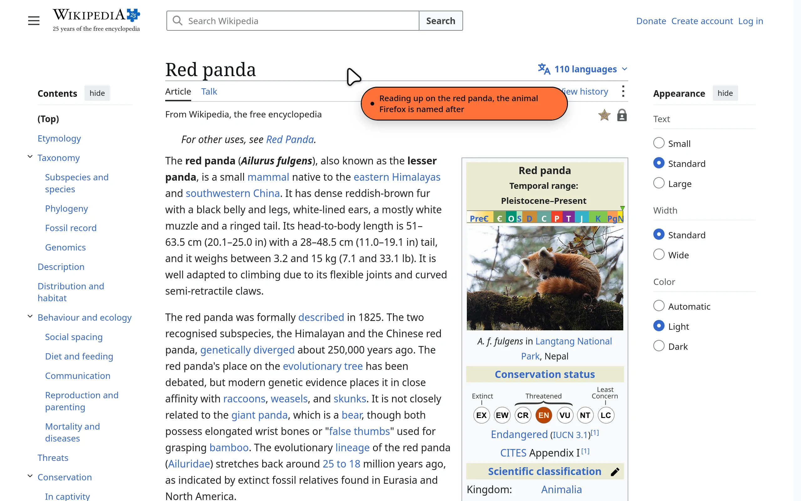
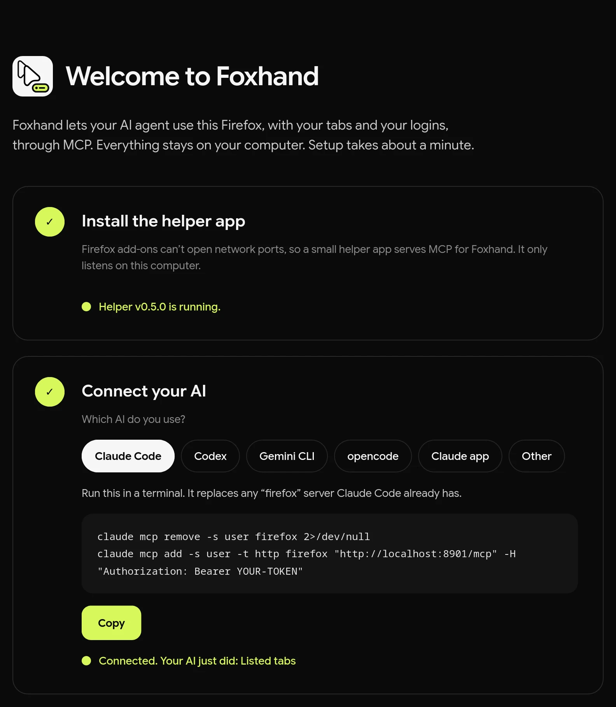
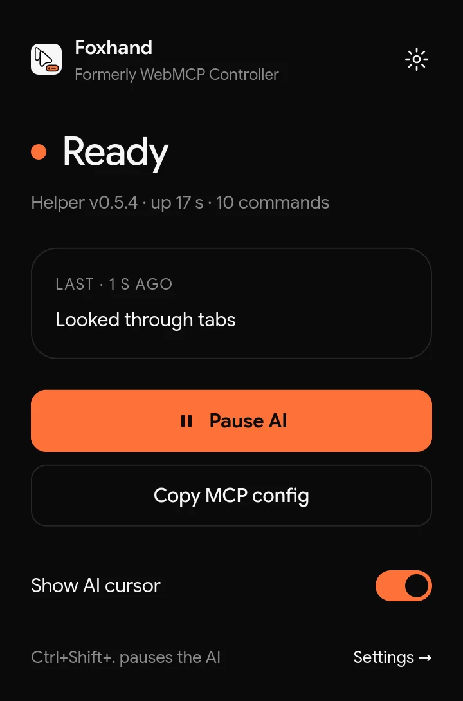

Foxhand is a Firefox add-on that connects Claude Code, Codex, Gemini CLI or any other MCP client to the browser you already use, with your tabs and your logins. A cursor shows what it's doing, and it all runs on your own computer.

Setup
The add-on opens a setup page that walks you through this and ticks off each step when it works.
From addons.mozilla.org. Firefox 142 or newer, on Windows, macOS or Linux.
Add-ons can't open network ports, so a small helper serves MCP for Foxhand, on this computer only. Paste one line, no admin rights needed:
curl -fsSL https://hamb1y.github.io/foxhand/sh | sh
irm https://hamb1y.github.io/foxhand/ps | iex
In Terminal. The script checks the download against the release's SHA-256 sums. Read it first.
In PowerShell. The script checks the download against the release's SHA-256 sums. Read it first.
The setup page gives you this with your token filled in. For example:
claude mcp add -s user -t http firefox http://localhost:8901/mcp \ -H "Authorization: Bearer <token>"
# ~/.codex/config.toml
[mcp_servers.firefox]
url = "http://localhost:8901/mcp"
http_headers = { Authorization = "Bearer <token>" }gemini mcp add --scope user --transport http firefox \ http://localhost:8901/mcp --header "Authorization: Bearer <token>"
{
"mcpServers": {
"firefox": {
"type": "http",
"url": "http://localhost:8901/mcp",
"headers": { "Authorization": "Bearer <token>" }
}
}
}
Then ask
Look at my open tabs and group them by topic.
Open github.com/hamb1y/foxhand and tell me what changed in the latest release.
Search my history for the last article I read about Firefox and summarize it.
45 tools
It reads pages through an accessibility snapshot, then clicks, types and fills forms by reference or by an element's visible name, the way a screen reader sees the page. Full descriptions are in the README.
alert, confirm) never freeze an action.You stay in charge

localhost only, and every request needs a 256-bit token. Nothing leaves your machine unless the AI tool you connect sends it somewhere.About the name
WebMCP is a proposed web standard that lets websites offer their own tools to AI agents. Foxhand isn't part of it and isn't related to it. It lets an agent use your browser on any site. The old name made that confusing, so we changed it in version 0.5.0.
Firefox updates the add-on for you, and your settings, token and MCP config keep working. Run the helper install command from step 2 once more to get the renamed helper. The old one hands over without a restart.
The add-on page, the GitHub repository and old download links all still work under the old names.